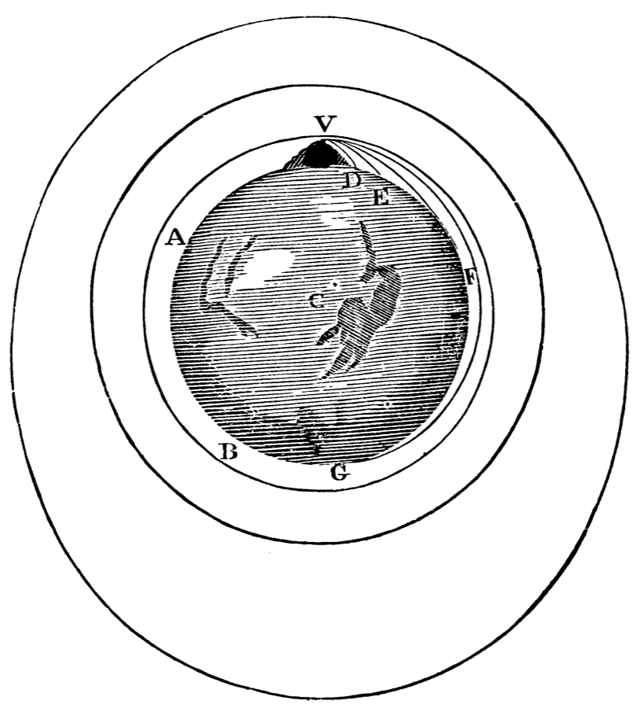

Description
Maya Chen has spent twenty years getting very good at a job she can read like a room. Then her best rep resigns for the AI-native competitor with four words she can't decode: "I'm coming in at L4." Then a loyal customer turns his laptop around in a renewal meeting and shows her a working piece of the product she sells him. He built it in two weekends. He runs a freight company. Nothing is broken. Nobody is angry. And the expertise Maya built her authority on has quietly become optional.
What she learns is not a better tool. It's a different way to lead. When a machine can draft anything, having the answers stops being the job. The job is knowing which questions still belong to people, and making room for them. So Maya starts stopping the machinery, thirty minutes at a time, to sit across from the human being on the other side of every deal. It costs her the certainty she used to lead with. It buys her what she had stopped expecting: a team that tells her the truth, customers who say what they actually need, and a way to lead that doesn't depend on knowing everything first.
For everyone who is very good at a job that is changing underneath them. And for everyone who has to lead without knowing all the answers.
For teams
This book was written to be read together.
- Team copies
- A conversation with the author
- Talks on leading through AI
About the author
Olawale Oladehin has spent nearly two decades helping large organizations adopt new technology, from the early years of cloud computing to AI. He has led technical experts at global companies, and he writes and speaks about AI transformation, leadership, and the work that stays human when the tools change. He holds a degree in computer science from Princeton University. Escape Velocity is his first novel. He lives in the Berkshires of western Massachusetts.